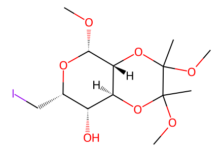
CO[C@H]1O[C@@H](CI)[C@@H](O)[C@@H]2OC(C)(OC)C(C)(OC)O[C@@H]12All source-drawn forward preparation branches in available SI pp2-7, from methyl alpha-D-glucopyranoside through five styryllactone targets and sugar regioisomers. Absolute configuration at unmarked butanediacetal centers remains unspecified. Main PDF unavailable; full article coverage not claimed. Facts compiled deterministically; independent review pending.
完整 JSON · 逐步 CSV · 路线序列 · SDF · HRMS 核对
| 事件 | 分子连接 | 报告产率 | Canonical reaction SMILES |
|---|---|---|---|
| E01 | 8 + phenyllithium → 6a + 6b | 6a: 29%; 6b: 48% | CO[C@H]1O[C@@H](CI)[C@@H](O)[C@@H]2OC(C)(OC)C(C)(OC)O[C@@H]12.[Li][c]1ccccc1>>C=C[C@H](O)[C@@H]1OC(C)(OC)C(C)(OC)O[C@H]1[C@@H](O)c1ccccc1.C=C[C@H](O)[C@@H]1OC(C)(OC)C(C)(OC)O[C@H]1[C@H](O)c1ccccc1 |
| E02 | 6a + methyl-acrylate → 7a | 7a: 75% | C=CC(=O)OC.C=C[C@H](O)[C@@H]1OC(C)(OC)C(C)(OC)O[C@H]1[C@@H](O)c1ccccc1>>COC(=O)/C=C/[C@H](O)[C@@H]1OC(C)(OC)C(C)(OC)O[C@H]1[C@@H](O)c1ccccc1 |
| E03 | 7a → ent-1 | ent-1: 43% | COC(=O)/C=C/[C@H](O)[C@@H]1OC(C)(OC)C(C)(OC)O[C@H]1[C@@H](O)c1ccccc1>>O=C1C[C@H]2O[C@@H]([C@H](O)c3ccccc3)[C@@H](O)[C@@H]2O1 |
| E04 | 6b + methyl-acrylate → 7b | 7b: 78% | C=CC(=O)OC.C=C[C@H](O)[C@@H]1OC(C)(OC)C(C)(OC)O[C@H]1[C@H](O)c1ccccc1>>COC(=O)/C=C/[C@H](O)[C@@H]1OC(C)(OC)C(C)(OC)O[C@H]1[C@H](O)c1ccccc1 |
| E05 | 7b → ent-3 | ent-3: 79% | COC(=O)/C=C/[C@H](O)[C@@H]1OC(C)(OC)C(C)(OC)O[C@H]1[C@H](O)c1ccccc1>>O=C1C[C@H]2O[C@@H]([C@@H](O)c3ccccc3)[C@@H](O)[C@@H]2O1 |
| E06 | ent-1 + cinnamic-acid → ent-4 + ent-5 | ent-4: 45%; ent-5: 39% | O=C(O)/C=C/c1ccccc1.O=C1C[C@H]2O[C@@H]([C@H](O)c3ccccc3)[C@@H](O)[C@@H]2O1>>O=C(/C=C/c1ccccc1)O[C@@H](c1ccccc1)[C@@H]1O[C@@H]2CC(=O)O[C@H]2[C@@H]1O.O=C(/C=C/c1ccccc1)O[C@@H]1[C@H]([C@H](O)c2ccccc2)O[C@@H]2CC(=O)O[C@@H]12 |
| E07 | 7b → 11 | 11: 78% | COC(=O)/C=C/[C@H](O)[C@@H]1OC(C)(OC)C(C)(OC)O[C@H]1[C@H](O)c1ccccc1>>COC(=O)C[C@@H]1O[C@H](c2ccccc2)[C@@H]2OC(C)(OC)C(C)(OC)O[C@H]2[C@@H]1O |
| E08 | 11 → ent-2 | ent-2: 87% | COC(=O)C[C@@H]1O[C@H](c2ccccc2)[C@@H]2OC(C)(OC)C(C)(OC)O[C@H]2[C@@H]1O>>O=C1C[C@@H]2O[C@@H](c3ccccc3)[C@H](O1)[C@@H](O)[C@@H]2O |
| E00a | 9 + butanedione → 10 + 10a | not reported | CC(=O)C(C)=O.CO[C@@H]1O[C@H](CO)[C@@H](O)[C@H](O)[C@H]1O>>CO[C@H]1O[C@@H](CO)[C@@H](O)[C@@H]2OC(C)(OC)C(C)(OC)O[C@@H]12.CO[C@H]1O[C@H](CO)[C@H]2OC(C)(OC)C(C)(OC)O[C@@H]2[C@H]1O |
| E00b | 10 → 8 | 8: 46% | CO[C@H]1O[C@@H](CO)[C@@H](O)[C@@H]2OC(C)(OC)C(C)(OC)O[C@@H]12>>CO[C@H]1O[C@@H](CI)[C@@H](O)[C@@H]2OC(C)(OC)C(C)(OC)O[C@@H]12 |
| E00c | 10a → 8a | 8a: 45% | CO[C@H]1O[C@H](CO)[C@H]2OC(C)(OC)C(C)(OC)O[C@@H]2[C@H]1O>>CO[C@H]1O[C@H](CI)[C@H]2OC(C)(OC)C(C)(OC)O[C@@H]2[C@H]1O |

CO[C@H]1O[C@@H](CI)[C@@H](O)[C@@H]2OC(C)(OC)C(C)(OC)O[C@@H]12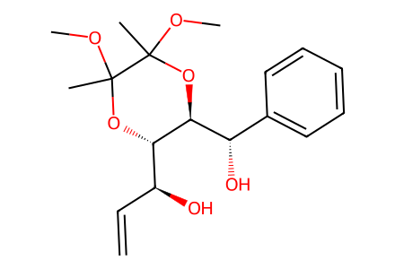
C=C[C@H](O)[C@@H]1OC(C)(OC)C(C)(OC)O[C@H]1[C@@H](O)c1ccccc1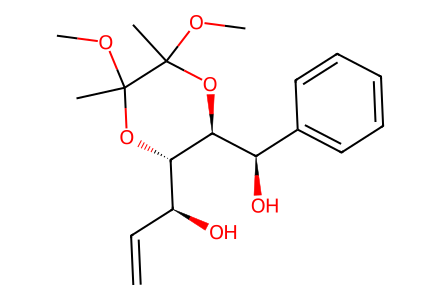
C=C[C@H](O)[C@@H]1OC(C)(OC)C(C)(OC)O[C@H]1[C@H](O)c1ccccc1
C=CC(=O)OC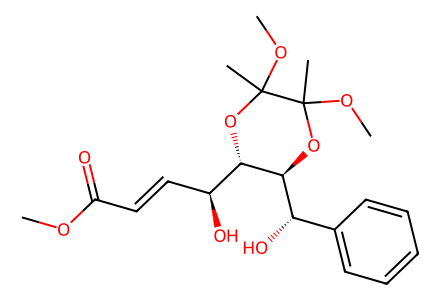
COC(=O)/C=C/[C@H](O)[C@@H]1OC(C)(OC)C(C)(OC)O[C@H]1[C@@H](O)c1ccccc1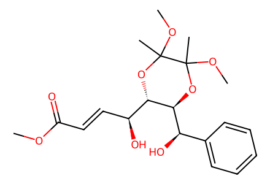
COC(=O)/C=C/[C@H](O)[C@@H]1OC(C)(OC)C(C)(OC)O[C@H]1[C@H](O)c1ccccc1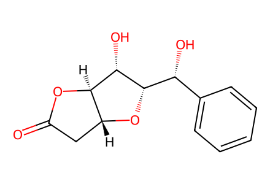
O=C1C[C@H]2O[C@@H]([C@H](O)c3ccccc3)[C@@H](O)[C@@H]2O1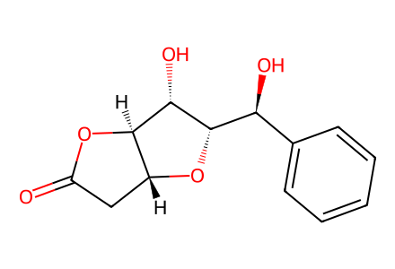
O=C1C[C@H]2O[C@@H]([C@@H](O)c3ccccc3)[C@@H](O)[C@@H]2O1
O=C(O)/C=C/c1ccccc1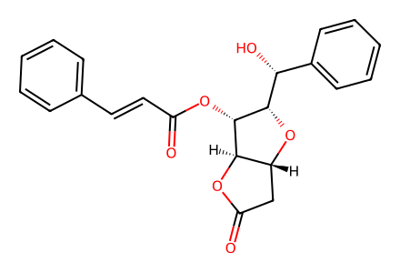
O=C(/C=C/c1ccccc1)O[C@@H]1[C@H]([C@H](O)c2ccccc2)O[C@@H]2CC(=O)O[C@@H]12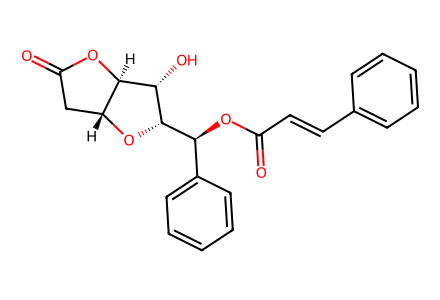
O=C(/C=C/c1ccccc1)O[C@@H](c1ccccc1)[C@@H]1O[C@@H]2CC(=O)O[C@H]2[C@@H]1O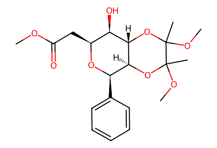
COC(=O)C[C@@H]1O[C@H](c2ccccc2)[C@@H]2OC(C)(OC)C(C)(OC)O[C@H]2[C@@H]1O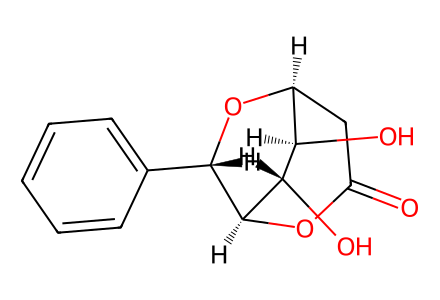
O=C1C[C@@H]2O[C@@H](c3ccccc3)[C@H](O1)[C@@H](O)[C@@H]2O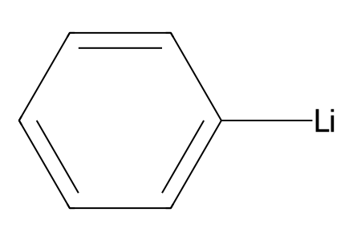
[Li][c]1ccccc1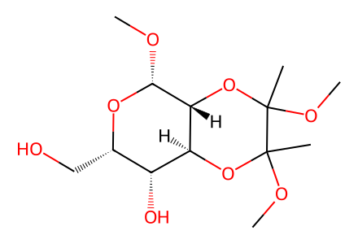
CO[C@H]1O[C@@H](CO)[C@@H](O)[C@@H]2OC(C)(OC)C(C)(OC)O[C@@H]12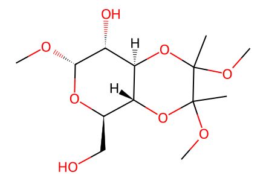
CO[C@H]1O[C@H](CO)[C@H]2OC(C)(OC)C(C)(OC)O[C@@H]2[C@H]1O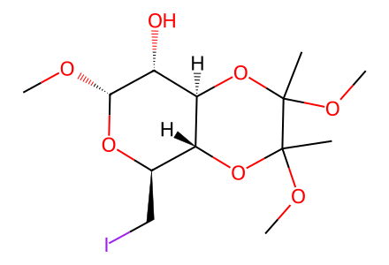
CO[C@H]1O[C@H](CI)[C@H]2OC(C)(OC)C(C)(OC)O[C@@H]2[C@H]1O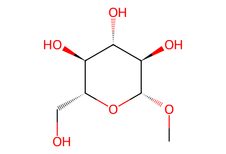
CO[C@@H]1O[C@H](CO)[C@@H](O)[C@H](O)[C@H]1O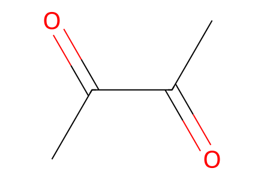
CC(=O)C(C)=O